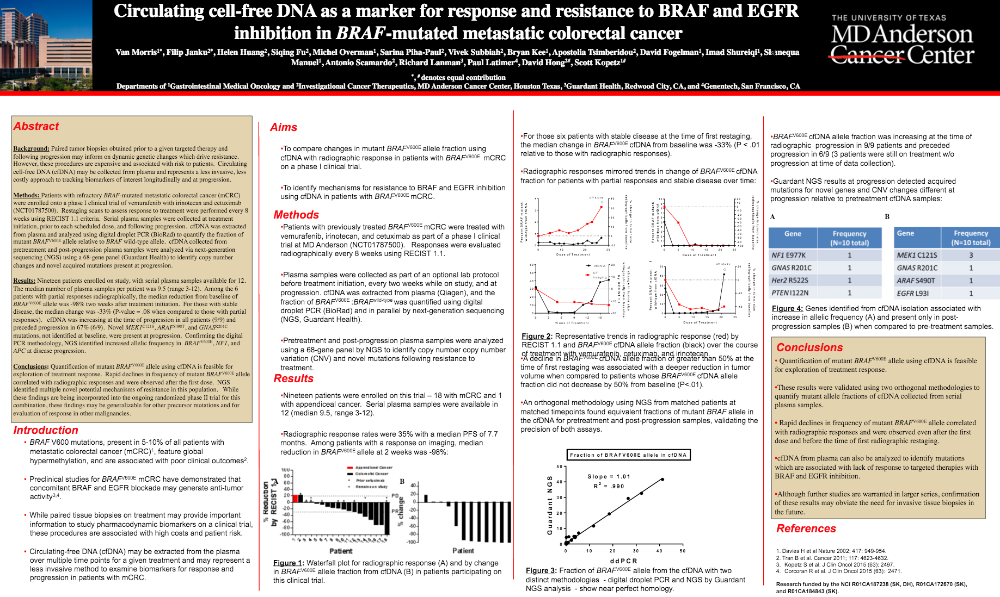
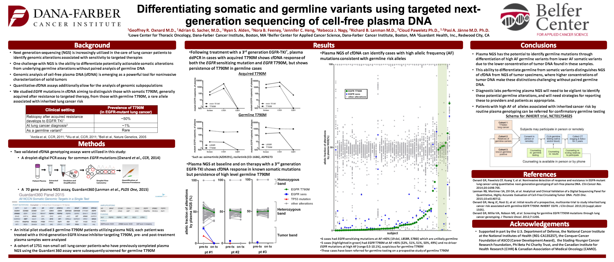
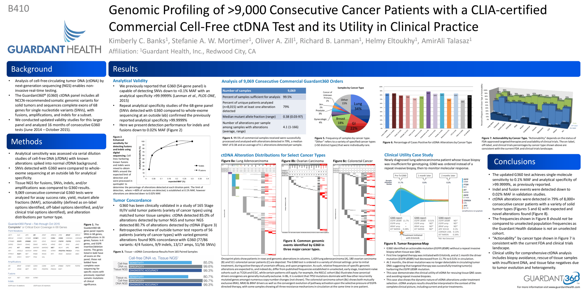
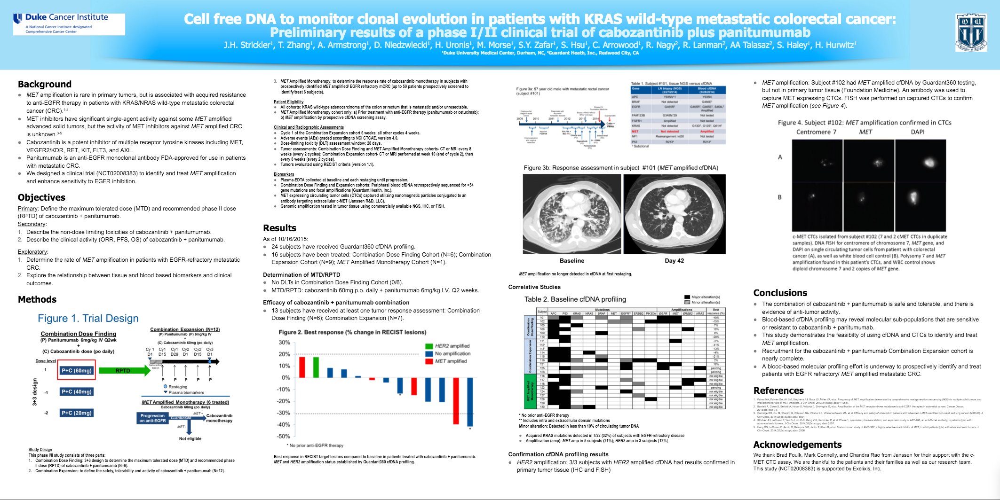
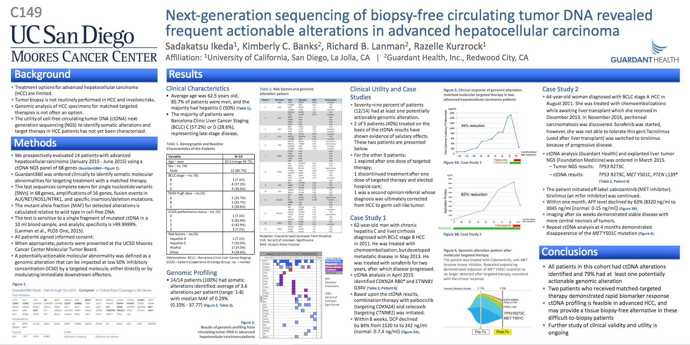
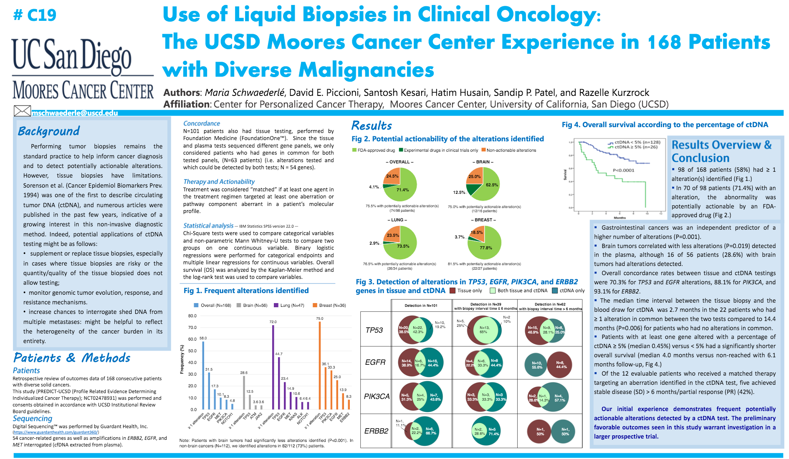

Posters featuring Guardant360
Thumbnail
Title
Author

Circulating cell-free DNA as a marker for response and resistance to BRAF and EGFR inhibition in BRAF-mutated metastatic colorectal cancer
Morris (Kopetz), MD Anderson Cancer Center

Differentiating somatic and germline variants using targeted next-generation sequencing (NGS) of cell-free plasma DNA (cfDNA)
Oxnard (Janne), Dana-Farber Cancer Institute

Genomic profiling of >9,000 consecutive cancer patients with a CLIA-certified commercial cell-free ctDNA test and its utility in clinical practice
Banks (Talasaz), Guardant Health
Impact of multi targeted Epigenetic therapy (MTET): a series of 100 consecutive advanced solid tumor cancers
Nezami, Pacific Medical Center of Hope

Cell free DNA to monitor clonal evolution in patients with KRAS-wildtype metastatic colorectal cancer: Preliminary results of a phase I/II clinical trial of cabozantinib plus panitumumab
Strickler (Hurwitz), Duke University
Development of EGFR C797S mutation in serial liquid biopsy assessments in the clinical practice setting
Mileham (Kim), Levine Cancer Institute

Next-generation sequencing of biopsy-free circulating tumor DNA revealed frequent actionable alterations in advanced hepatocellular carcinoma
Ikeda (Kurzrock), UCSD

Use of liquid biopsies in clinical oncology: the UCSD Moores Cancer Center experience in 168 patients with diverse malignancies
Schwaederle (Kurzrock), UCSD